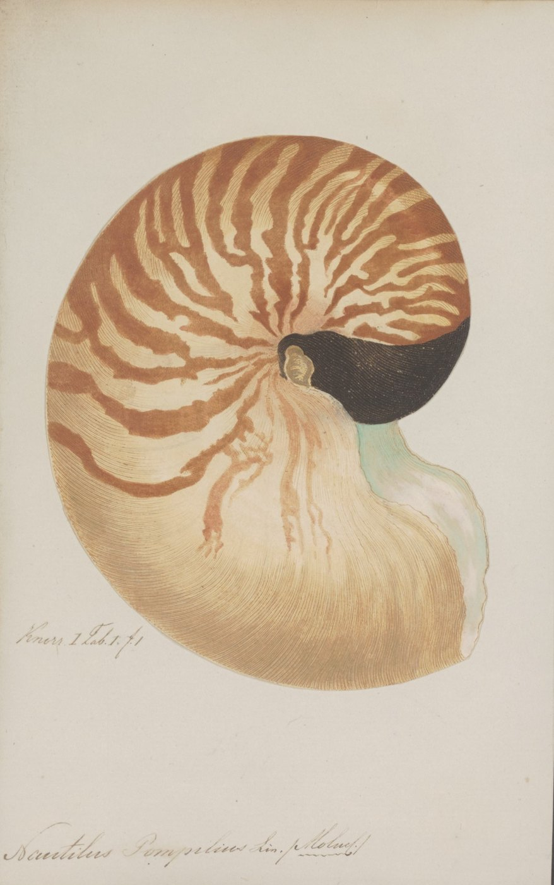
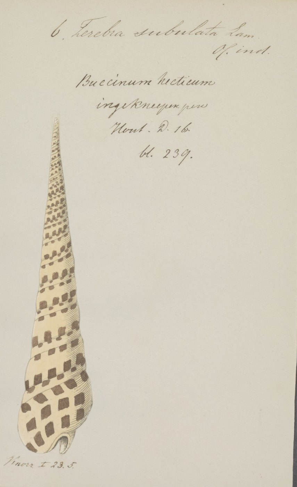
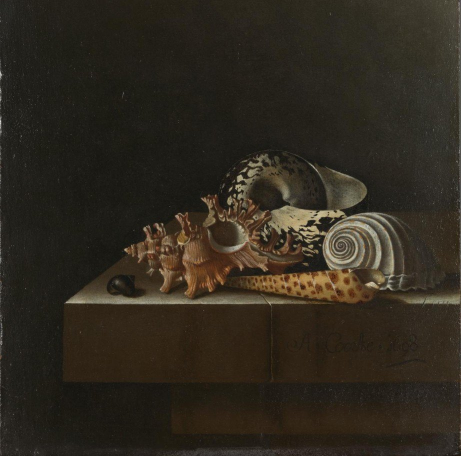
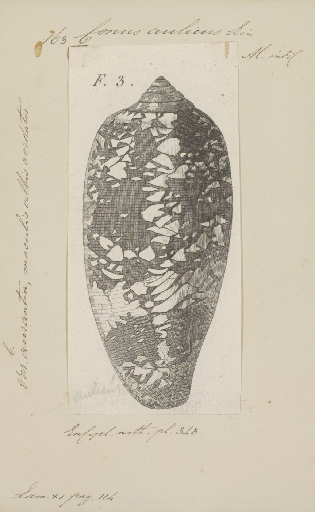
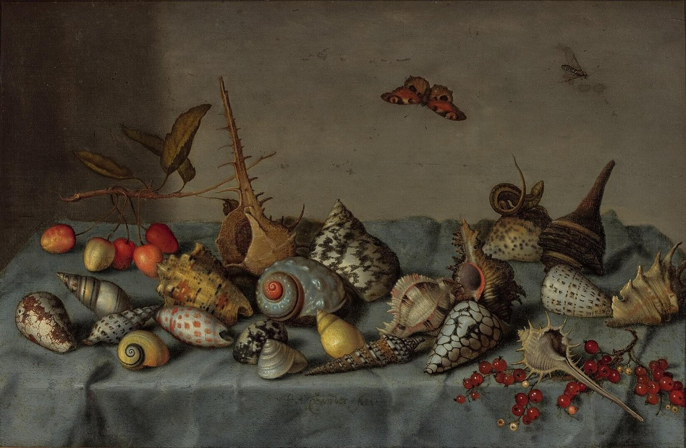
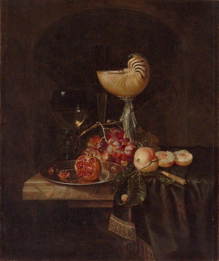

Een tentoonstelling in het Allard Pierson
Shellsof Knowledge
Waar eindigt wetenschap, en waar begint kunst?
Zoölogische prenten uit de collectie van het Allard Pierson hangen naast schilderijen waarop dezelfde schelpen te zien zijn. Kijk, en beslis zelf.
- Waar
- Allard Pierson, Oude Turfmarkt, Amsterdam
- Wat
- Prenten en schilderijen, paar voor paar
- Wanneer
- Binnenkort, data volgen

De tentoonstelling
Kunst of wetenschap?
Een schelp kan het huisje van een dier zijn, een studieobject, een verzamelstuk of een bron van inspiratie.
Shells of Knowledge zet zoölogische prenten uit de Iconographia Zoologica naast schilderijen waarop dezelfde schelpen te zien zijn. Een wetenschappelijke illustratie lijkt kennis over te dragen en een schilderij schoonheid, maar bij beide maakt iemand keuzes over wat er in beeld komt en hoe.
Waar wetenschap ophoudt en kunst begint, laat de tentoonstelling graag aan jou over. Onderweg krijg je een paar handvatten mee om er zelf over na te denken.
Handvatten om mee te kijken
Achtergrond
Achter de schelp
Schelpen zijn eeuwenlang verzameld, bestudeerd en geschilderd. Het dier dat ze maakte, raakt daarbij vaak uit beeld.
Kijken is kiezen
Bij een wetenschappelijke prent en bij een schilderij beslist iemand wat er in beeld komt, hoe het eruitziet en voor wie het bedoeld is. Een prent kan mooi zijn, en een schilderij kan iets over de natuur vertellen. De twee categorieën sluiten elkaar dus niet uit.
Schelpen waren eeuwenlang onderzoeksobject, verzamelstuk, betaalmiddel en symbool tegelijk. Daarom lenen ze zich goed voor de vraag waar die grens ligt.
Van boek naar blad
De prenten in de Iconographia Zoologica komen grotendeels uit boeken. Ze werden uitgeknipt, op losse bladen gezet en voorzien van aantekeningen over soortnaam en vindplaats. In de negentiende eeuw bracht conservator Robert Thomas Maitland ze onder in één systeem.
Zo kreeg elk beeld een nieuwe rol: een plaat uit een schelpenboek werd een document in een zoölogische verzameling, en hangt nu als prent in een museum.
Wat maakt een dier de moeite waard om te bestuderen, of om te schilderen?
Van het aquarium naar de prent
De prenten hoorden ooit bij de bibliotheek van Artis en worden nu bewaard in het Allard Pierson. Wie in Artis levende weekdieren heeft gezien, ziet hier hoe ze werden bestudeerd, verzameld en geschilderd. Zo sluit de tentoonstelling aan op een bezoek aan het aquarium.
Een greep uit de werken
Prent naast schilderij
In de tentoonstelling zet elk paar een blad uit de Iconographia Zoologica naast een schilderij met dezelfde schelp. Hier lichten we er een paar uit; de rest zie je in het Allard Pierson.

Terebra subulata, ingekleurde gravure uit Knorrs schelpenboekIconographia Zoologica · Allard Pierson

Adriaen Coorte, Schelpen op een stenen plint, 1698Rijksmuseum (bruikleen)
De priemslak
Coorte schilderde elke schelp met zijn eigen vorm en tekening, zo precies dat het museum de soorten kan benoemen. De priemslak ligt vooraan op de plint, dezelfde soort als op de prent.
- Prent
- Terebra subulata, ingekleurde gravure, gemonteerd op een blad met aantekeningen
- Schilderij
- Olieverf op papier op paneel
- Collectie
- Allard Pierson · Rijksmuseum (bruikleen)
Het schilderij is nauwkeurig genoeg om er een soortenlijst uit op te stellen, terwijl de prent komt uit een boek dat in zijn titel genoegen voor oog en gemoed belooft.
Is nauwkeurigheid een kenmerk van wetenschap, of van vakmanschap?

Conus aulicus, gravure uit de Encyclopédie méthodiqueIconographia Zoologica · Allard Pierson

Balthasar van der Ast, Stilleven met schelpen, ca. 1640Museum Boijmans Van Beuningen
De kegelslak
Op het schilderij liggen schelpen uit gebieden ver van elkaar, waaronder kegelslakken die nauw verwant zijn aan de soort op de prent.
- Prent
- Conus aulicus, ongekleurde gravure, opgeplakt op een blad met aantekeningen
- Schilderij
- Olieverf op paneel
- Collectie
- Allard Pierson · Museum Boijmans Van Beuningen
Dezelfde vorm komt twee keer terug: in zwart lijnwerk om een soort te herkennen, en in kleur tussen kersen, een vlinder en een hagedis.
Welke van de twee vertelt jou meer over het dier?
Nautilus pompilius, ingekleurde gravure uit Knorrs schelpenboekIconographia Zoologica · Allard Pierson

Nicolaas van Gelder, Fruitstilleven met nautilusbeker, 1675Museum De Lakenhal
De nautilus
In het midden van het schilderij staat een nautilusbeker: een bewerkte schelp die rust op een zilveren kariatide.
- Prent
- Nautilus pompilius, ingekleurde gravure, gemonteerd op een blad met aantekeningen
- Schilderij
- Olieverf op doek
- Collectie
- Allard Pierson · Museum De Lakenhal
Van Gelder schilderde een kunstvoorwerp dat zelf van een natuurobject is gemaakt. De prent toont dezelfde schelp zonder zilver en zonder bewerking: als het huisje van een dier.
Wanneer houdt een schelp op natuur te zijn?
De stemtafel
Kunst of wetenschap? Jij kiest
In de tentoonstelling kies je bij elk paar zelf. Probeer het hier met de uitgelichte werken: schuif naar de kant die jij kiest. Er is geen goed antwoord.
Jouw verdeling
Elk paar is verbonden met een stippellijn. Hoe verder de twee uit elkaar liggen, hoe groter het verschil dat jij ziet.
Audiotour
Twee stemmen bij elk paar
Bij elk paar in de tentoonstelling hoor je een natuuronderzoeker en een kunsthistoricus over hetzelfde beeld. Hier een voorproefje bij de uitgelichte paren.
Inleiding
Shells of Knowledge
Online verder
Wat niet op de wand past
Bij elk werk staat een code. Daarmee vind je op deze site meer over de herkomst van het blad, de soort en het schilderij.
Voor scholen
Een kijkopdracht voor klassen: leerlingen kiezen zelf twee beelden en verdedigen waarom het ene kunst is en het andere wetenschap.
Plan je bezoek
Naar Shells of Knowledge
De tentoonstelling is onderdeel van een bezoek aan het Allard Pierson. De audiotour is te beluisteren op je eigen telefoon.
- Waar
- Allard PiersonOude Turfmarkt, Amsterdam
- Wanneer
- Data volgenTe zien tijdens de openingstijden van het museum
- Toegang
- Met een toegangsbewijs van het Allard Pierson
- Bereikbaarheid
- Metrohalte Rokin ligt om de hoek
- Toegankelijkheid
- Zitplekken, teksten in grote letters en een audiobeschrijving bij elk paar
- Tijd
- Neem de tijd: de audiotour laat je bij elk paar stilstaan
Bezoek
Kies een moment
Kies een dag en een tijd. Doordeweekse ochtenden zijn het rustigst.
Het boekje bij de tentoonstellingCatalogusteksten bij alle paren, met de prenten op ware grootte.